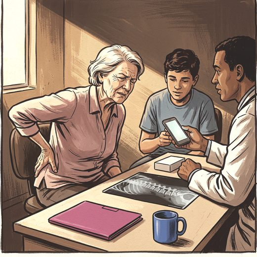

Consulta rápida à beira do leito
Condutas, doses e interações.
Referências da aula · 10
- LeBoff MS, Greenspan SL, Insogna KL, Lewiecki EM, Saag KG, Singer AJ, et al. The clinician's guide to prevention and treatment of osteoporosis. Osteoporos Int. 2022;33(10):2049-102. PMID 35478046. doi:10.1007/s00198-021-05900-y.PubMedDOI
- Qaseem A, Hicks LA, Etxeandia-Ikobaltzeta I, Shekelle P, Cross JT Jr; Clinical Guidelines Committee of the American College of Physicians. Pharmacologic treatment of primary osteoporosis or low bone mass to prevent fractures in adults: a living clinical guideline from the American College of Physicians. Ann Intern Med. 2023;176(2):224-38. PMID 36592456. doi:10.7326/M22-1034.PubMedDOI
- Camacho PM, Petak SM, Binkley N, Diab DL, Eldeiry LS, Farooki A, et al. American Association of Clinical Endocrinologists/American College of Endocrinology clinical practice guidelines for the diagnosis and treatment of postmenopausal osteoporosis: 2020 update. Endocr Pract. 2020;26(Suppl 1):1-46. PMID 32427503. doi:10.4158/GL-2020-0524SUPPL.PubMedDOI
- Kendler DL, Marin F, Zerbini CAF, Russo LA, Greenspan SL, Zikan V, et al. Effects of teriparatide and risedronate on new fractures in post-menopausal women with severe osteoporosis (VERO): a multicentre, double-blind, double-dummy, randomised controlled trial. Lancet. 2018;391(10117):230-40. PMID 29129436. doi:10.1016/S0140-6736(17)32137-2.PubMedDOI
- Cosman F, Crittenden DB, Adachi JD, Binkley N, Czerwinski E, Ferrari S, et al. Romosozumab treatment in postmenopausal women with osteoporosis. N Engl J Med. 2016;375(16):1532-43. PMID 27641143. doi:10.1056/NEJMoa1607948.PubMedDOI
- Saag KG, Petersen J, Brandi ML, Karaplis AC, Lorentzon M, Thomas T, et al. Romosozumab or alendronate for fracture prevention in women with osteoporosis. N Engl J Med. 2017;377(15):1417-27. PMID 28892457. doi:10.1056/NEJMoa1708322.PubMedDOI
- Langdahl BL, Libanati C, Crittenden DB, Bolognese MA, Brown JP, Daizadeh NS, et al. Romosozumab (sclerostin monoclonal antibody) versus teriparatide in postmenopausal women with osteoporosis transitioning from oral bisphosphonate therapy (STRUCTURE). Lancet. 2017;390(10102):1585-94. PMID 28755782. doi:10.1016/S0140-6736(17)31613-6.PubMedDOI
- Leder BZ, Tsai JN, Uihlein AV, Wallace PM, Lee H, Neer RM, et al. Denosumab and teriparatide transitions in postmenopausal osteoporosis (the DATA-Switch study): extension of a randomised controlled trial. Lancet. 2015;386(9999):1147-55. PMID 26144908. doi:10.1016/S0140-6736(15)61120-5.PubMedDOI
- U.S. Food and Drug Administration. FORTEO (teriparatide) injection: prescribing information. 2026.
- NPS MedicineWise. Romosozumab for osteoporosis. Aust Prescr. (consulta ao texto sobre dose, duração e contraindicação).